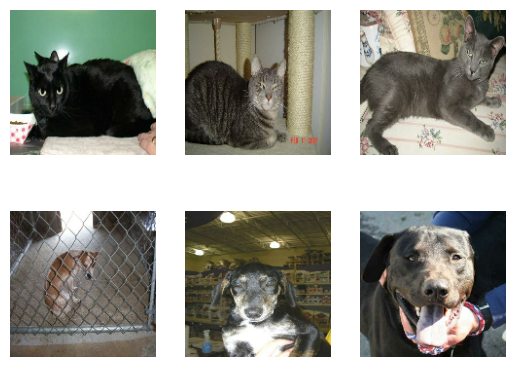
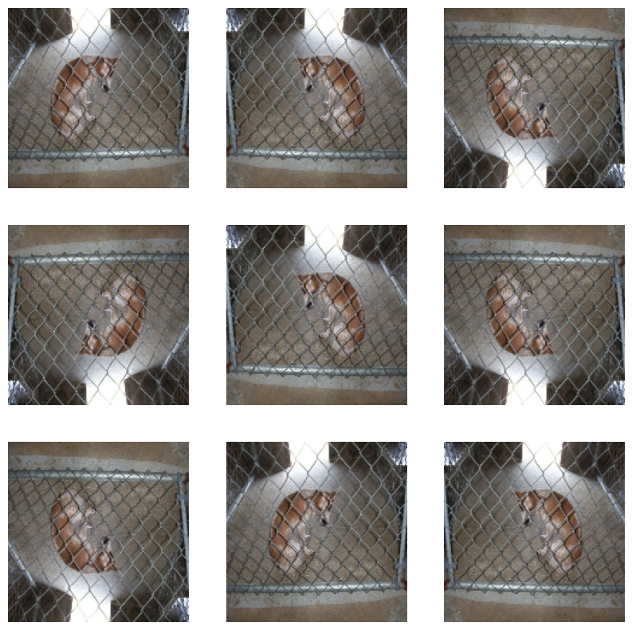
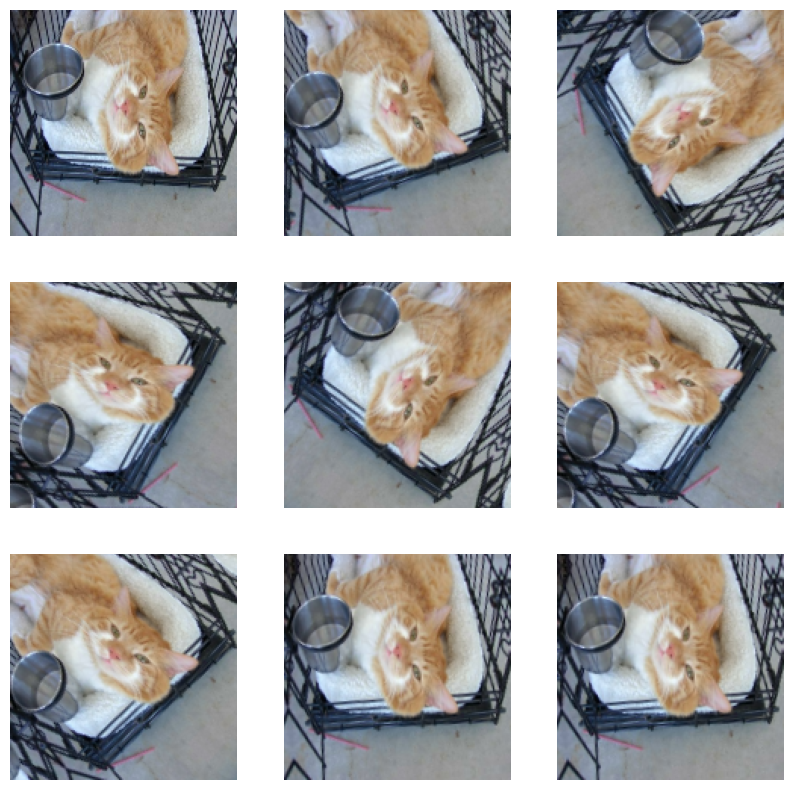
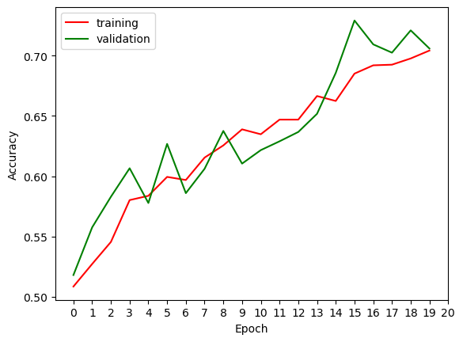

# importing necessary packages
import os
import numpy as np
# setting the Keras backend to TensorFlow
os.environ["KERAS_BACKEND"] = "tensorflow"
# Importing TensorFlow's Keras module and specific submodules
from tensorflow import keras # High-level neural networks API
from tensorflow.keras import utils, layers, models # Components for building and training neural networks
# Importing TensorFlow Datasets module for convenient access to datasets
import tensorflow_datasets as tfds
# Importing specific components from TensorFlow for data manipulation
from tensorflow import expand_dims # Expanding dimensions of a tensor
from tensorflow import data as tf_data # TensorFlow data module for building input pipelines
# Importing Matplotlib for data visualization
from matplotlib import pyplot as plt
# Importing the random module for generating random numbers
import random# creates our training, validation, and testing data sets
train_ds, validation_ds, test_ds = tfds.load(
"cats_vs_dogs",
# 40% for training, 10% for validation, and 10% for test (the rest unused)
split=["train[:40%]", "train[40%:50%]", "train[50%:60%]"],
as_supervised=True, # Include labels
)
print(f"Number of training samples: {train_ds.cardinality()}")
print(f"Number of validation samples: {validation_ds.cardinality()}")
print(f"Number of test samples: {test_ds.cardinality()}")Number of training samples: 9305
Number of validation samples: 2326
Number of test samples: 2326# resizing our data sets
resize_fn = keras.layers.Resizing(150, 150)
train_ds = train_ds.map(lambda x, y: (resize_fn(x), y)) # using lambda function to resize the train_ds code
validation_ds = validation_ds.map(lambda x, y: (resize_fn(x), y)) # using lambda function to resize the validation_ds code
test_ds = test_ds.map(lambda x, y: (resize_fn(x), y)) # using lambda function to resize teh test_ds codefrom tensorflow import data as tf_data
batch_size = 64
train_ds = train_ds.batch(batch_size).prefetch(tf_data.AUTOTUNE).cache()
validation_ds = validation_ds.batch(batch_size).prefetch(tf_data.AUTOTUNE).cache()
test_ds = test_ds.batch(batch_size).prefetch(tf_data.AUTOTUNE).cache()# writing a function to randomly visualize 3 images of cats and 3 images of dogs
#show 3 cats, 3 dogs
def visualize(dataset):
#plt.figure(figsize=(10, 6))
dogs = 0
cats = 0
n=random.randint(1,20) # makes it so we have a random image of dogs and cats
for img, lbl in dataset.take(1): # iterates through the images and their corresponding label
for i in range(32+n):
i = i+n
if int(lbl[i]) == 1 and dogs < 3: # repeats while the number of dogs pulled is less than 3
ax = plt.subplot(2, 3, dogs+4)
plt.imshow(img[i].numpy().astype("uint8"))
plt.axis("off") # removes axis numbering
dogs = dogs + 1
if int(lbl[i]) == 0 and cats < 3: # repeates while the number of cats pulled is less than 3
ax = plt.subplot(2, 3, cats+1)
plt.imshow(img[i].numpy().astype("uint8"))
plt.axis("off") # removes axis numbering
cats = cats + 1
visualize(train_ds) # use the above function2024-03-03 16:39:33.544254: W tensorflow/core/kernels/data/cache_dataset_ops.cc:858] The calling iterator did not fully read the dataset being cached. In order to avoid unexpected truncation of the dataset, the partially cached contents of the dataset will be discarded. This can happen if you have an input pipeline similar to `dataset.cache().take(k).repeat()`. You should use `dataset.take(k).cache().repeat()` instead.
# check label frequencies#The following line of code will create an iterator called labels_iterator.
labels_iterator= train_ds.unbatch().map(lambda image, label: label).as_numpy_iterator()
# computes the number of dogs and cats in our data. The label 0 corresponds to cats, and 1 corresponds to dogs
cats = 0
dogs = 0
for label in labels_iterator:
if label == 0: # label zero corresponds to cats
cats = cats + 1
if label ==1: # 1 corresponds to dogs
dogs = dogs + 1
accuracy = dogs/(cats+dogs) # assume always guessing dogs out of all the cats and dogs
rounded = round((accuracy*100),2) # rounds to 2 decimal places
print(f"There are {cats} cats and {dogs} dogs")
print(f"If we always guess dogs for each image the baseline will be {rounded}% accurate")There are 4637 cats and 4668 dogs
If we always guess dogs for each image the baseline will be 50.17% accurate# first modelfirst_model = models.Sequential([
layers.Input((150, 150, 3)), #this layer needs to be same size as image
layers.Conv2D(32, (3, 3), activation='relu'),
layers.MaxPooling2D((2, 2)),
layers.Conv2D(32, (3, 3), activation='relu'),
layers.MaxPooling2D((2, 2)),
layers.Conv2D(64, (3, 3), activation='relu'),
layers.Dropout(0.2),
layers.MaxPooling2D((2, 2)),
layers.Flatten(),
layers.Dense(64, activation='relu'),
layers.Dense(1) #the layer thats outputted
])
first_model.compile(optimizer='adam',
loss=keras.losses.BinaryCrossentropy(from_logits=True),
metrics=['accuracy'])history1 = first_model.fit(train_ds,
epochs=20,
validation_data=validation_ds)Epoch 1/20
146/146 [==============================] - 36s 246ms/step - loss: 5.1396 - accuracy: 0.5810 - val_loss: 0.5930 - val_accuracy: 0.6268
Epoch 2/20
146/146 [==============================] - 36s 246ms/step - loss: 0.5496 - accuracy: 0.7003 - val_loss: 0.5361 - val_accuracy: 0.6887
Epoch 3/20
146/146 [==============================] - 36s 247ms/step - loss: 0.4738 - accuracy: 0.7595 - val_loss: 0.5089 - val_accuracy: 0.7124
Epoch 4/20
146/146 [==============================] - 36s 249ms/step - loss: 0.4098 - accuracy: 0.7985 - val_loss: 0.5640 - val_accuracy: 0.6866
Epoch 5/20
146/146 [==============================] - 37s 256ms/step - loss: 0.3538 - accuracy: 0.8356 - val_loss: 0.5650 - val_accuracy: 0.7352
Epoch 6/20
146/146 [==============================] - 36s 245ms/step - loss: 0.3288 - accuracy: 0.8487 - val_loss: 0.8084 - val_accuracy: 0.6853
Epoch 7/20
146/146 [==============================] - 36s 248ms/step - loss: 0.2932 - accuracy: 0.8641 - val_loss: 0.7522 - val_accuracy: 0.7231
Epoch 8/20
146/146 [==============================] - 37s 252ms/step - loss: 0.2703 - accuracy: 0.8785 - val_loss: 0.6786 - val_accuracy: 0.7403
Epoch 9/20
146/146 [==============================] - 39s 271ms/step - loss: 0.2836 - accuracy: 0.8735 - val_loss: 0.6400 - val_accuracy: 0.7463
Epoch 10/20
146/146 [==============================] - 39s 264ms/step - loss: 0.2461 - accuracy: 0.8898 - val_loss: 0.7905 - val_accuracy: 0.7347
Epoch 11/20
146/146 [==============================] - 38s 257ms/step - loss: 0.2433 - accuracy: 0.8943 - val_loss: 0.7968 - val_accuracy: 0.7261
Epoch 12/20
146/146 [==============================] - 38s 258ms/step - loss: 0.2060 - accuracy: 0.9149 - val_loss: 0.7978 - val_accuracy: 0.7412
Epoch 13/20
146/146 [==============================] - 38s 260ms/step - loss: 0.2168 - accuracy: 0.9091 - val_loss: 0.7550 - val_accuracy: 0.7425
Epoch 14/20
146/146 [==============================] - 37s 253ms/step - loss: 0.1868 - accuracy: 0.9184 - val_loss: 0.7612 - val_accuracy: 0.7145
Epoch 15/20
146/146 [==============================] - 35s 243ms/step - loss: 0.1690 - accuracy: 0.9270 - val_loss: 0.8398 - val_accuracy: 0.7416
Epoch 16/20
146/146 [==============================] - 35s 239ms/step - loss: 0.2053 - accuracy: 0.9121 - val_loss: 0.8432 - val_accuracy: 0.7339
Epoch 17/20
146/146 [==============================] - 38s 257ms/step - loss: 0.1618 - accuracy: 0.9309 - val_loss: 0.9763 - val_accuracy: 0.7128
Epoch 18/20
146/146 [==============================] - 35s 243ms/step - loss: 0.1459 - accuracy: 0.9428 - val_loss: 0.8642 - val_accuracy: 0.7304
Epoch 19/20
146/146 [==============================] - 35s 238ms/step - loss: 0.1473 - accuracy: 0.9411 - val_loss: 0.9056 - val_accuracy: 0.7322
Epoch 20/20
146/146 [==============================] - 35s 236ms/step - loss: 0.1535 - accuracy: 0.9367 - val_loss: 0.9860 - val_accuracy: 0.7339plt.plot(history1.history["accuracy"], label = "training", color = "red")
plt.plot(history1.history["val_accuracy"], label = "validation", color = "green")
plt.gca().set(xlabel = "Epoch", ylabel = "Accuracy", xticks=np.arange(21))
plt.legend()
def flip():
'''
No paremeters. Returns 9 flipped versions of a random image from the dataset
'''
for image, _ in train_ds.take(1):
plt.figure(figsize=(10, 10))
n=random.randint(1,20) # gets a random image to test the rotation on
first_image = image[n] #the random image
ax = plt.subplot(3, 3, 1)
plt.imshow(first_image / 255) #plot the first image normally
plt.axis('off')
for i in range(8):
ax = plt.subplot(3, 3, i + 2) #for each slot...
augmented_image = layers.RandomFlip()(expand_dims(first_image, 0)) #transform the image
plt.imshow(augmented_image[0] / 255)
plt.axis('off')def rotation():
'''
No paremeters. Returns 9 rotated versions of a random image from the dataset
'''
for image, _ in train_ds.take(1):
plt.figure(figsize=(10, 10))
n=random.randint(1,20) # gets a random image to test the rotation on
first_image = image[n]
ax = plt.subplot(3, 3, 1)
plt.imshow(first_image / 255)
plt.axis('off')
for i in range(8):
ax = plt.subplot(3, 3, i + 2)
augmented_image = layers.RandomRotation(0.2)(expand_dims(first_image, 0))
plt.imshow(augmented_image[0] / 255)
plt.axis('off')flip()
rotation()
second_model = models.Sequential([
layers.Input((150, 150, 3)),
layers.RandomFlip(),
layers.RandomRotation(0.2),
layers.Conv2D(32, (3, 3), activation='relu'),
layers.MaxPooling2D((2, 2)),
layers.Conv2D(32, (3, 3), activation='relu'),
layers.MaxPooling2D((2, 2)),
layers.Conv2D(64, (3, 3), activation='relu'),
layers.MaxPooling2D((2, 2)),
layers.Flatten(),
layers.Dense(128, activation='relu'),
layers.Dropout(0.2),
layers.Dense(1)
])
second_model.compile(optimizer='adam',
loss=keras.losses.BinaryCrossentropy(from_logits=True),
metrics=['accuracy'])history2 = second_model.fit(train_ds,
epochs=20,
validation_data=validation_ds)Epoch 1/20
146/146 [==============================] - 37s 252ms/step - loss: 5.5375 - accuracy: 0.5085 - val_loss: 0.6789 - val_accuracy: 0.5181
Epoch 2/20
146/146 [==============================] - 36s 245ms/step - loss: 0.6796 - accuracy: 0.5272 - val_loss: 0.6669 - val_accuracy: 0.5576
Epoch 3/20
146/146 [==============================] - 36s 245ms/step - loss: 0.6669 - accuracy: 0.5455 - val_loss: 0.6565 - val_accuracy: 0.5830
Epoch 4/20
146/146 [==============================] - 36s 247ms/step - loss: 0.6527 - accuracy: 0.5802 - val_loss: 0.6496 - val_accuracy: 0.6066
Epoch 5/20
146/146 [==============================] - 36s 245ms/step - loss: 0.6480 - accuracy: 0.5838 - val_loss: 0.6448 - val_accuracy: 0.5778
Epoch 6/20
146/146 [==============================] - 37s 251ms/step - loss: 0.6421 - accuracy: 0.5995 - val_loss: 0.6403 - val_accuracy: 0.6268
Epoch 7/20
146/146 [==============================] - 37s 252ms/step - loss: 0.6443 - accuracy: 0.5969 - val_loss: 0.6302 - val_accuracy: 0.5860
Epoch 8/20
146/146 [==============================] - 40s 271ms/step - loss: 0.6319 - accuracy: 0.6155 - val_loss: 0.6294 - val_accuracy: 0.6062
Epoch 9/20
146/146 [==============================] - 38s 260ms/step - loss: 0.6269 - accuracy: 0.6256 - val_loss: 0.6233 - val_accuracy: 0.6376
Epoch 10/20
146/146 [==============================] - 36s 248ms/step - loss: 0.6137 - accuracy: 0.6389 - val_loss: 0.6076 - val_accuracy: 0.6105
Epoch 11/20
146/146 [==============================] - 36s 247ms/step - loss: 0.6113 - accuracy: 0.6348 - val_loss: 0.6109 - val_accuracy: 0.6217
Epoch 12/20
146/146 [==============================] - 36s 247ms/step - loss: 0.6051 - accuracy: 0.6470 - val_loss: 0.6064 - val_accuracy: 0.6290
Epoch 13/20
146/146 [==============================] - 36s 247ms/step - loss: 0.6065 - accuracy: 0.6470 - val_loss: 0.5921 - val_accuracy: 0.6367
Epoch 14/20
146/146 [==============================] - 36s 249ms/step - loss: 0.5914 - accuracy: 0.6665 - val_loss: 0.5962 - val_accuracy: 0.6518
Epoch 15/20
146/146 [==============================] - 40s 273ms/step - loss: 0.5926 - accuracy: 0.6624 - val_loss: 0.5635 - val_accuracy: 0.6857
Epoch 16/20
146/146 [==============================] - 37s 254ms/step - loss: 0.5691 - accuracy: 0.6851 - val_loss: 0.5563 - val_accuracy: 0.7291
Epoch 17/20
146/146 [==============================] - 37s 252ms/step - loss: 0.5596 - accuracy: 0.6920 - val_loss: 0.5326 - val_accuracy: 0.7094
Epoch 18/20
146/146 [==============================] - 36s 249ms/step - loss: 0.5606 - accuracy: 0.6925 - val_loss: 0.5396 - val_accuracy: 0.7025
Epoch 19/20
146/146 [==============================] - 36s 247ms/step - loss: 0.5513 - accuracy: 0.6977 - val_loss: 0.5153 - val_accuracy: 0.7210
Epoch 20/20
146/146 [==============================] - 36s 248ms/step - loss: 0.5448 - accuracy: 0.7042 - val_loss: 0.5402 - val_accuracy: 0.7059plt.plot(history2.history["accuracy"], label = "training", color = "red")
plt.plot(history2.history["val_accuracy"], label = "validation", color = "green")
plt.gca().set(xlabel = "Epoch", ylabel = "Accuracy", xticks=np.arange(21))
plt.legend()
i = keras.Input(shape=(150, 150, 3))
# The pixel values have the range of (0, 255), but many models will work better if rescaled to (-1, 1.)
# outputs: `(inputs * scale) + offset`
scale_layer = keras.layers.Rescaling(scale=1 / 127.5, offset=-1)
x = scale_layer(i)
preprocessor = keras.Model(inputs = i, outputs = x)
third_model = models.Sequential([
preprocessor,
layers.RandomFlip(),
layers.RandomRotation(0.2),
layers.Conv2D(32, (3, 3), activation='relu'),
layers.MaxPooling2D((2, 2)),
layers.Conv2D(32, (3, 3), activation='relu'),
layers.MaxPooling2D((2, 2)),
layers.Conv2D(64, (3, 3), activation='relu'),
layers.MaxPooling2D((2, 2)),
layers.Conv2D(64, (3, 3), activation='relu'),
layers.MaxPooling2D((2, 2)),
layers.Flatten(),
layers.Dense(128, activation='relu'),
layers.Dropout(0.2),
layers.Dense(1, activation="sigmoid")
])
third_model.compile(optimizer='adam',
loss=keras.losses.BinaryCrossentropy(),
metrics=['accuracy'])history3 = third_model.fit(train_ds,
epochs=20,
validation_data=validation_ds)Epoch 1/20
146/146 [==============================] - 40s 270ms/step - loss: 0.6816 - accuracy: 0.5559 - val_loss: 0.6381 - val_accuracy: 0.6440
Epoch 2/20
146/146 [==============================] - 38s 263ms/step - loss: 0.6387 - accuracy: 0.6337 - val_loss: 0.5879 - val_accuracy: 0.6939
Epoch 3/20
146/146 [==============================] - 38s 260ms/step - loss: 0.6004 - accuracy: 0.6750 - val_loss: 0.5464 - val_accuracy: 0.7158
Epoch 4/20
146/146 [==============================] - 38s 258ms/step - loss: 0.5785 - accuracy: 0.6968 - val_loss: 0.5346 - val_accuracy: 0.7373
Epoch 5/20
146/146 [==============================] - 39s 266ms/step - loss: 0.5625 - accuracy: 0.7110 - val_loss: 0.5292 - val_accuracy: 0.7403
Epoch 6/20
146/146 [==============================] - 38s 262ms/step - loss: 0.5441 - accuracy: 0.7269 - val_loss: 0.5191 - val_accuracy: 0.7433
Epoch 7/20
146/146 [==============================] - 39s 269ms/step - loss: 0.5269 - accuracy: 0.7410 - val_loss: 0.5103 - val_accuracy: 0.7532
Epoch 8/20
146/146 [==============================] - 38s 258ms/step - loss: 0.5097 - accuracy: 0.7496 - val_loss: 0.4930 - val_accuracy: 0.7687
Epoch 9/20
146/146 [==============================] - 40s 276ms/step - loss: 0.5012 - accuracy: 0.7567 - val_loss: 0.4910 - val_accuracy: 0.7726
Epoch 10/20
146/146 [==============================] - 44s 302ms/step - loss: 0.4858 - accuracy: 0.7635 - val_loss: 0.4741 - val_accuracy: 0.7777
Epoch 11/20
146/146 [==============================] - 40s 276ms/step - loss: 0.4728 - accuracy: 0.7728 - val_loss: 0.4583 - val_accuracy: 0.7898
Epoch 12/20
146/146 [==============================] - 38s 258ms/step - loss: 0.4598 - accuracy: 0.7778 - val_loss: 0.4533 - val_accuracy: 0.7971
Epoch 13/20
146/146 [==============================] - 37s 254ms/step - loss: 0.4522 - accuracy: 0.7843 - val_loss: 0.4407 - val_accuracy: 0.7988
Epoch 14/20
146/146 [==============================] - 38s 263ms/step - loss: 0.4402 - accuracy: 0.7911 - val_loss: 0.4314 - val_accuracy: 0.8048
Epoch 15/20
146/146 [==============================] - 41s 281ms/step - loss: 0.4314 - accuracy: 0.7990 - val_loss: 0.4175 - val_accuracy: 0.8091
Epoch 16/20
146/146 [==============================] - 38s 261ms/step - loss: 0.4225 - accuracy: 0.8033 - val_loss: 0.4112 - val_accuracy: 0.8074
Epoch 17/20
146/146 [==============================] - 37s 256ms/step - loss: 0.4091 - accuracy: 0.8097 - val_loss: 0.4051 - val_accuracy: 0.8156
Epoch 18/20
146/146 [==============================] - 37s 255ms/step - loss: 0.3942 - accuracy: 0.8185 - val_loss: 0.3977 - val_accuracy: 0.8207
Epoch 19/20
146/146 [==============================] - 37s 255ms/step - loss: 0.3878 - accuracy: 0.8207 - val_loss: 0.3911 - val_accuracy: 0.8216
Epoch 20/20
146/146 [==============================] - 37s 255ms/step - loss: 0.3838 - accuracy: 0.8259 - val_loss: 0.3946 - val_accuracy: 0.8229